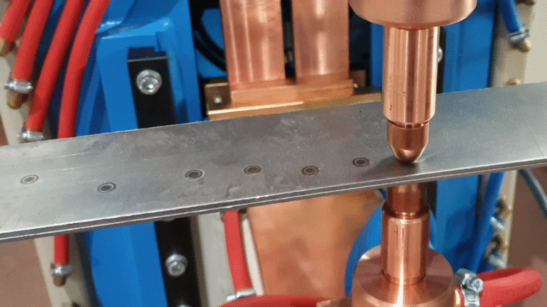
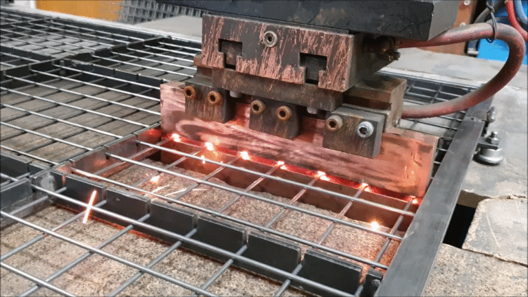
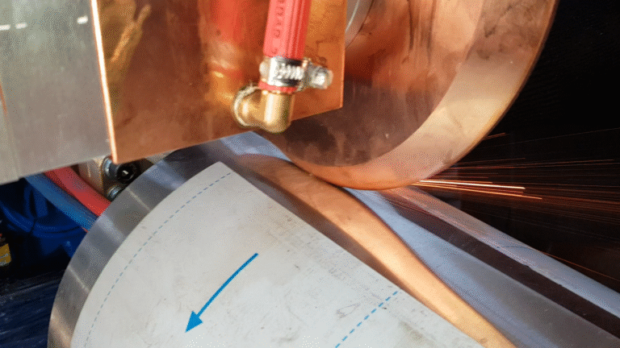
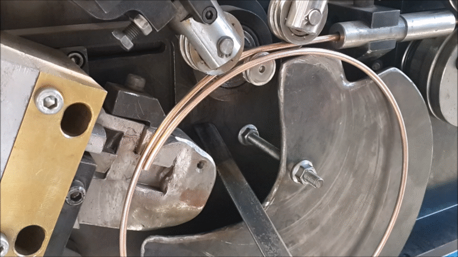
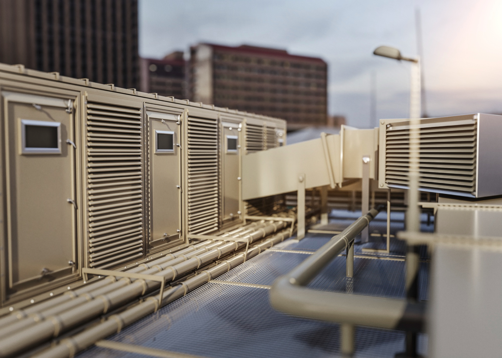
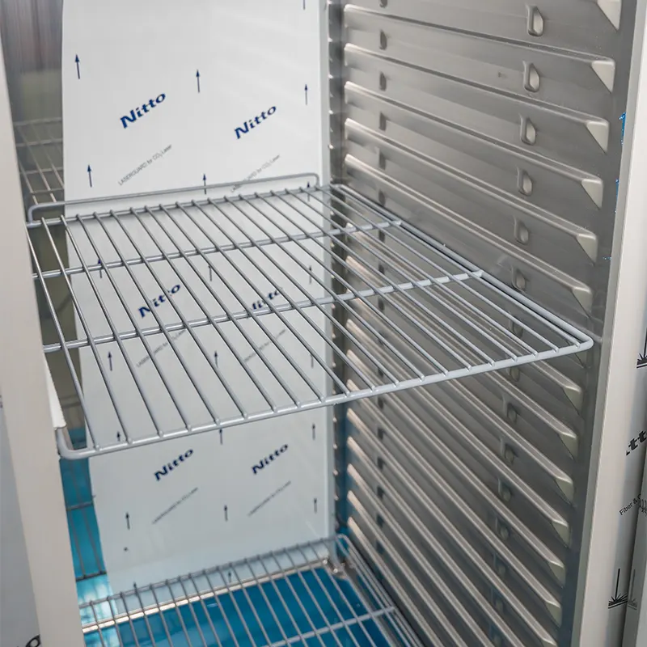
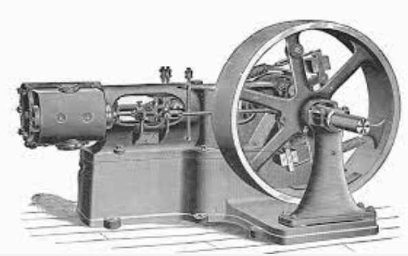
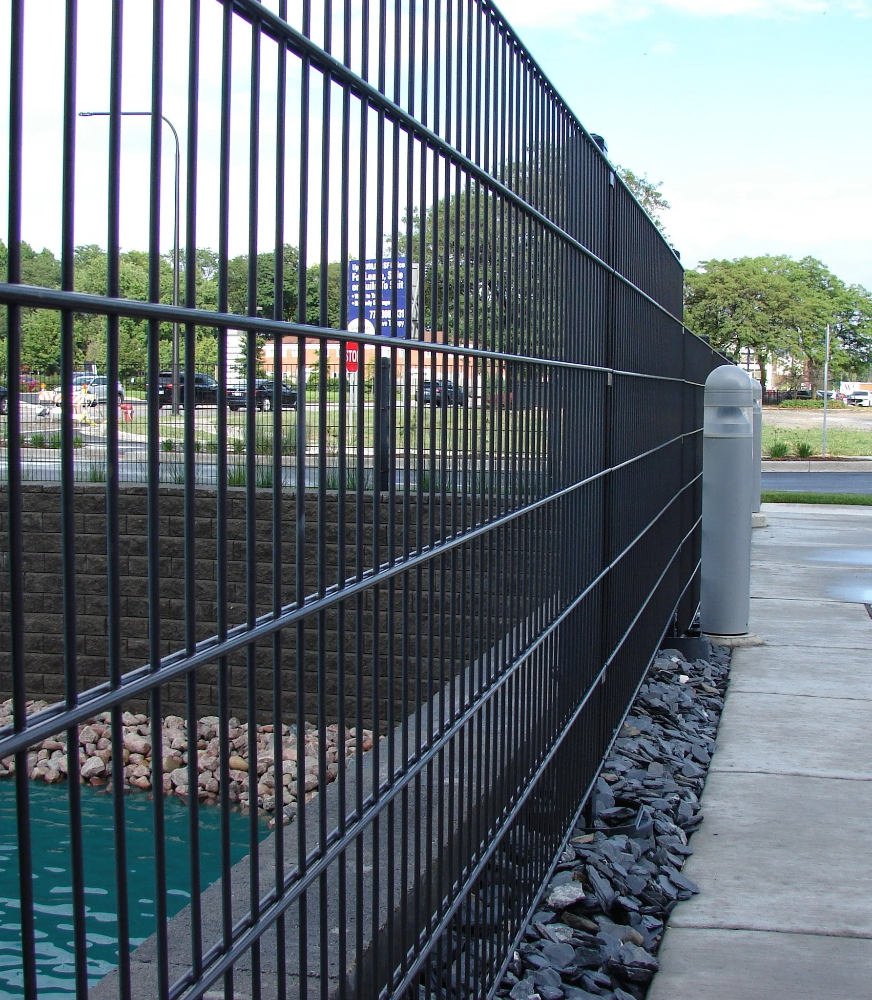

Endüstriyel Kaynak Teknolojileri
3 kıtada, 31 ülkeye makine ihracatı.
40 yıllık sanayi ve hizmet deneyimi, lider iş ortaklarıyla küresel büyüme. Punta kaynak, dikiş kaynak ve form makinelerinde endüstriyel üretimin çözüm ortağıyız.
Ürün Grupları
Üretim hattınıza güç katan
makine aileleri
Punta Kaynak Makineleri
Ayak pedallı, üstten kollu, projeksiyon, alın, askılı, masa tipi ve çok noktalı seriler.
Tel Punta Kaynak Makineleri
CNC tel punta, çelik hasır ve panel çit kaynak makineleri.
Dikiş Kaynak Makineleri
Boy dikiş, kenar dikiş, universal ve işe özel dikiş kaynak çözümleri.
Form Makineleri
Tel kesme, tel bükme ve tel doğrultma makineleri.
Soğutma Sistemleri
Kaynak hatlarında kesintisiz verim için endüstriyel soğutma üniteleri.
Yedek Parça & Ekipmanlar
Orijinal yedek parça ve ekipmanlarla uzun ömürlü makine performansı.
Sektörel Projeler
Sektöründe öncü
faaliyet gruplarımız

Beyaz Eşya ve Ev Aletleri
Buzdolabı rafından fırın gövdesine, seri üretim hatları için hassas punta çözümleri.
S/02
Enerji ve İklimlendirme
Radyatör, kombi ve iklimlendirme ekipmanlarında dikiş ve punta kaynak hatları.
S/03
İnşaat ve Yapı
Çelik hasır ve panel çit üretiminde yüksek kapasiteli çok noktalı kaynak sistemleri.
S/04
Otomotiv Sanayi
Gövde ve şasi komponentlerinde otomasyona hazır projeksiyon kaynak makineleri.
S/05
Üretim ve İmalat
Genel imalat sanayine işe özel tasarlanan kaynak ve form makineleri.
Kurumsal
Türkiye'den dünyaya,
1985'ten beri.

Sağlam Makina'nın temel stratejisi; Türkiye ekonomisine katma değer yaratmaya devam ederken, yenilikçi ürün ve hizmetler geliştirmeye odaklı, ufku dünya pazarlarına açık bir vizyon üzerine kurulu.
2025 yılında 40. kuruluş yıl dönümünü kutlayan Sağlam Makina; başta Türkiye olmak üzere dünyanın farklı pazarlarında beyaz eşya, inşaat, otomotiv ve diğer sektörlere hitap ederek istikrarlı büyümesini sürdürüyor.
Yüksek kalite ve dayanıklılıkta ürettiğimiz makineler; kullanıcı dostu arayüzleri ve yüksek performanslarıyla endüstriyel üretim süreçlerinde verimliliği ve hassasiyeti artırıyor.
İyi Bir Dünya İçin
Sürdürülebilirlik yolculuğumuz
Sürdürülebilirlik yolculuğumuza 8 yıl önce başladık. İklim, insan ve inovasyon başlıklarını ele aldığımız stratejimizde, geleceğe yaşanabilir bir dünya bırakmak için çalışmalarımızı sürdürüyoruz.
Basında Biz
Sağlam Makina haberler

Makine Sektörünün Dünü, Bugünü ve Yarını
40 yıllık sanayi deneyimimizle Türk makine sektörünün dönüşümünü değerlendiriyoruz.
Daha fazla oku →
40. Yılımızı Kutluyoruz
1985'ten bugüne uzanan hikâyemizi, müşterilerimizin anılarıyla ölümsüzleştiriyoruz.
Hikayeni paylaş →Uluslararası Fuar Takvimi
Yıl boyunca katıldığımız yurt içi ve yurt dışı fuarlarda makinelerimizi yerinde inceleyin.
Fuar takvimi →Üretiminiz için doğru makineyi birlikte seçelim.
Teklif talebinizi oluşturun; mühendis ekibimiz üretim ihtiyacınıza uygun kapasite ve konfigürasyonu sizinle birlikte belirlesin.